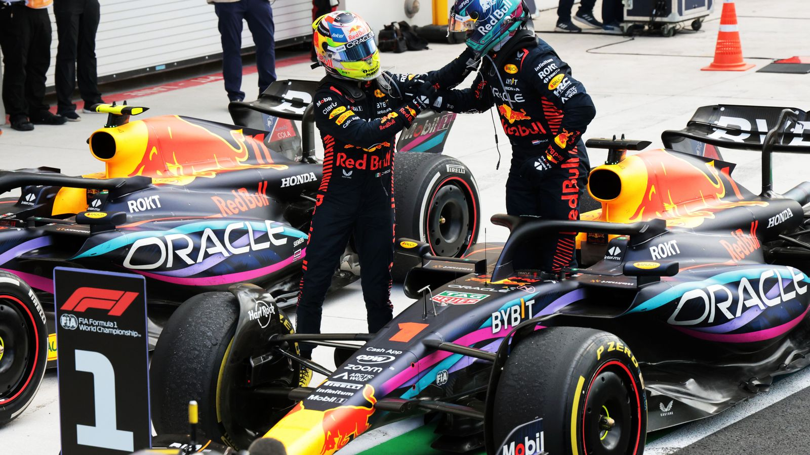
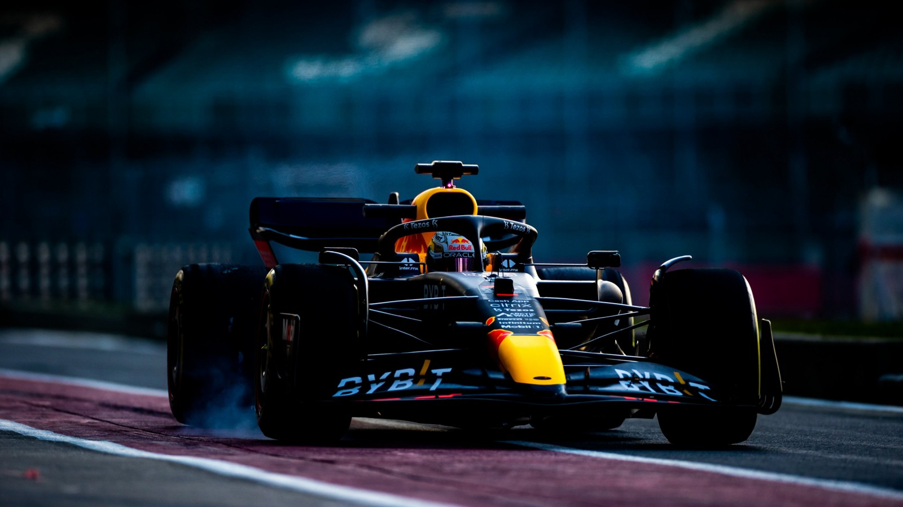

Red Bull Racing es un equipo privado de origen austríaco con sede en Milton Keynes, Gran Bretaña. Es propiedad de la marca de bebidas Red Bull GmbH. Para poder encontrar el origen de la escudería nos tenemos que remontar al año 1987, cuando fue patrocinadora del piloto Gerhard Berger. Más tarde, entre los año 1995 y 2004, patrocinó al equipo Sauber. No sería hasta el 2005, cuando el equipo anunció la adquisición de Jaguar Racing, lo que le permitiría fundar su propia escudería.
No obstante, el equipo también cuenta con otro equipo satélite en la Fórmula 1, conocido como RB Formula One Team y que ha servido como trampolín para pilotos jóvenes que luego pasan al equipo principal. También, es importante destacar que esta escudería satélite ha experimentado varios cambios de nombre a lo largo de los años. El equipo pasó a llamarse Scuderia Toro Rosso tras su adquisión en 2005 pero, en el año 2020, el equipo volvió a cambiar su nombre nuevament por Scuderia AlphaTauri, tomando el nombre de la marca de moda propiedad de Red Bull, AlphaTauri. Pero este no sería el último cambio que se produciría, ya que durante la temporada 2023 de F1, el equipo anunció que a partir de la temporada 2024 pasaría a llamarse Visa Cash App Red Bull Formula One Team.
La entidad ganó fuerza en 2007 y 2008 con el fichaje del reputado ingeniero inglés Adrian Newey, que se unió al equipo en calidad de director técnico. Pero no fue hasta el año 2009 cuando daría el verdadero salto dentro de la élite de la Fórmula Uno. Con el piloto alemán Sebastian Vettel al Volante y Adrian Newey en la mesa de diseño, aprovechó una nueva modificación del Reglamento Técnico para crear una dinastía de monoplazas que pasó a la historia por su eficacia y excelencia aerodinámica. Entre las temporadas 2010 y 2013, dominó en los circuitos de todo el mundo y conquistó cuatro Mundiales de Constructores y de Pilotos de manera consecutiva.

Enfrentaron también, como equipo, varios desafíos ya que los cambios que introdujo la FIA (Federación Internacional de Automovilismo) en las regulaciones técnicas, afectaron al diseño y requirieron de ajustes importantes. Por ejemplo, con la entrada de los nuevos propulsores V6 turbo, la escudería experimentó problemas notorios de fiabilidad en sus unidades de motor Renault, su suministrador de motores. A lo largo de la temporada 2014, no lograron mantener su dominio anterior debido al dominio superior de la escudería Mercedes. Experimentaron algunos abondonos debido a distintos problemas mecánicos y accidentes en los que se vieron involucrados. A pesar de todo, supieron reponerse consiguiendo 3 victorias y varios podios a lo largo de la temporada, asegurandose el subcampeonato del Mundial de Constructores.
La siguiente temporada no fue mucho mejor que la anterior, ya que por primera vez desde 2008, la escudería cerró una temporada de F1 sin ninguna victoria en su palmarés. La tensión entre Red Bull y su suministrador de motor en aquel momento, Renault, fue tan en aumento que ambas partes rompieron su contrato de cara a la temporada que viene. No obstante, se vieron abocados a firmar un nuevo acuerdo. Ninguna otra escudería quiso facilitarles una nueva unidad de potencia, queriendo así evitar un nuevo dominio de los austríacos. Pero todo cambiaría a partir de la temporada 2016, que se caracterizó por una mejora significativa en su rendimiento. Con un chasis competitivo y el desarrollo contínuo de su unidad de potencia Renault, el equipo logró múltiples victorias y podios, desafiando el dominio de Mercedes y Ferrari. Pilotos como Max Verstappen y Daniel Ricciardo jugaron un papel crucial en el éxito del equipo, demostrando un rendimiento sólido en la pista y contribuyendo a la competitividad de Red Bull en el Mundial de Constructores.
Red Bull Racing ha sido el hogar de varios pilotos notables en la Fórmula 1 a lo largo de los años. Entre ellos se encuentran David Coulthard, quien aportó su experiencia y habilidades desde la temporada inaugural 2005 hasta 2008. Mark Webber, el talentoso piloto australiano, se unió al equipo en 2007 y compitió hasta su retirada al final de la temporada 2013, logrando múltiples victorias, hasta su retirada que se produjó al final de la temporada 2013. Sebastian Vettel, se convirtió en uno de los pilotos más exitosos del equipo, estableciendo múltiples records y ganando cuatro campeonatos mundiales consecutivos entre las temporadas 2010 y 2013. Otro australiano destacó entre las filas de Red Bull: Daniel Ricciardo. Conocido por su estilo de conducción agresivo y su carimsmática personalidad, compitió para Red Bull entre 2014 y 2018, logrando múltiples victorias.
Pero, hay un piloto que sin duda destaca sobre el resto, y ese es Max Verstappen. El neerlandés, que empezó su andadura en la categoría reina del automovilismo en la escudería Toro Rosso, es actualmente 3 veces ganador del Mundial de Pilotos y cuenta con un buen número de récords a sus espaldas: a lo largo de la temporada 2023 consiguió entre otros, el mayor número de victorias en una temporada (19 de 22), el porcentaje más alto de victorias en una temporada, mayor número de victorias consecutivas (10), mayor número de podios en una temporada (21 de 22) y es el único piloto que ha liderado durante más de 1000 vueltas en una misma temporada.
El Red Bull Ring, anteriormente conocido como Österreichring, es un circuito de carreras ubicado en Spielberg, Austria, propiedad de Red Bull GmbH. Desde su inauguración el 26 de julio de 1969, se ha consolidado como un lugar icónico en el mundo del automovilismo. Con su diseño pintoresco y desafiante, el Red Bull Ring es famoso por sus cambios de elevación pronunciados y sus curvas rápidas. Tras una renovación completa en 2011, el circuito volvió a albergar competiciones de Fórmula 1 en 2014, marcando su regreso a la máxima categoría del automovilismo.
Con una longitud de solo 4.3 kilómetros y una capacidad para 40,000 espectadores, el Red Bull Ring es un circuito relativamente corto pero ofrece múltiples oportunidades de adelantamiento. Su primera curva, conocida como "Remus", y la curva "Red Bull Mobile", que precede a la recta principal, son puntos estratégicos clave durante las carreras y ofrecen oportunidades de adelantamiento emocionantes.
Debido a su ubicación en las montañas, el clima en el Red Bull Ring puede ser impredecible, con cambios repentinos en las condiciones meteorológicas que pueden afectar significativamente el resultado de las carreras. Esto añade un elemento adicional de emoción y estrategia para los equipos y pilotos. Además, los espectadores pueden disfrutar de vistas panorámicas de las montañas circundantes mientras observan la acción en la pista.
Además de las carreras de Fórmula 1, el Red Bull Ring alberga otros eventos importantes de automovilismo, como el Mundial de Moto GP, el Open Internacional de GT, el Deutsche Tourenwagen Masters y el ADAC GT Masters. Su hermoso entorno montañoso y su atmósfera única lo convierten en uno de los destinos favoritos tanto para pilotos como para aficionados, añadiendo un elemento especial a cada evento celebrado en el circuito.